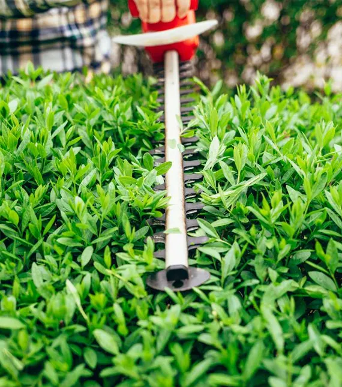
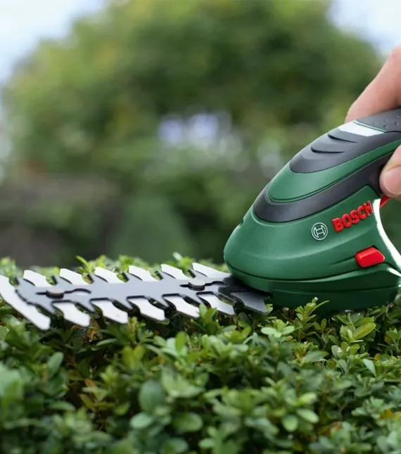

Lagrene Paysagiste 59, expert en taille de haie à Lille, 59000
Taille de haie à Lille
Chez Lagrene Paysagiste 59 à Lille, 59000, la taille de haie est un art que nous maîtrisons avec une précision méticuleuse. Chaque intervention est façonnée par notre expertise, chaque coupe est exécutée avec une attention minutieuse pour créer des haies qui ne sont pas seulement esthétiquement plaisantes, mais qui reflètent également notre engagement envers la santé végétale. Notre équipe dévouée s’investit pleinement pour garantir que chaque haie taillée soit une œuvre d’art vivante, un élément clé d’un paysage verdoyant et harmonieux.
Notre savoir-faire
Un service qualitatif avec Lagrene Paysagiste 59
Chez Lagrene Paysagiste 59 à Lille, 59000, la qualité ne connaît pas de compromis, même à des tarifs abordables. Chaque taille de haie est exécutée avec un soin méticuleux et une expertise inégalée. Notre engagement envers des tarifs compétitifs vise à rendre notre savoir-faire accessible à tous, offrant ainsi des haies parfaitement taillées qui rehaussent la beauté de votre espace extérieur sans peser sur votre budget.

Expertise confirmée en taille de haie à Lille
Chez Lagrene Paysagiste 59 à Lille, 59000, la taille de haie est notre spécialité, notre passion. Chaque membre de notre équipe est imprégné d’une expertise confirmée, investissant son savoir-faire dans chaque coupe pour transformer vos haies en éléments d’esthétique naturelle. Chaque intervention est réalisée avec une précision chirurgicale, favorisant non seulement l’aspect visuel, mais aussi la vigueur et la vitalité de vos haies pour un jardin épanoui.
Devis gratuit pour une taille de haie réfléchie avec Lagrene Paysagiste 59
Lagrene Paysagiste 59 à Lille, 59000, s’engage à offrir bien plus qu’un simple devis gratuit pour la taille de haie. Chaque estimation est élaborée avec minutie, chaque détail est examiné et planifié pour offrir une vision complète de l’intervention à réaliser. Notre équipe d’experts se tient à votre disposition pour discuter et adapter chaque étape selon vos besoins spécifiques, garantissant ainsi des haies taillées selon vos souhaits.

Pour des haies magnifiques et équilibrées visuellement
À Lagrene Paysagiste 59 à Lille, 59000, chaque intervention en taille de haie est gérée avec professionnalisme et dévouement. Chaque membre de notre équipe apporte son expertise, sa passion pour créer des haies taillées avec soin. Nous considérons chaque coupe comme une opportunité de transcender l’esthétique pour offrir des haies non seulement magnifiques visuellement, mais aussi parfaitement équilibrées et en bonne santé.
La taille de haie ? Leur véritable marque de précision
La taille de haie chez Lagrene Paysagiste 59 à Lille, 59000, est une véritable marque de précision. Chaque intervention est effectuée avec une minutie exceptionnelle, chaque branche taillée avec délicatesse pour créer des haies qui transcendent la simple fonctionnalité pour devenir de véritables pièces maîtresses de votre jardin. Notre engagement total envers chaque détail garantit des haies équilibrées, symétriques, et témoigne de notre souci constant de vous offrir des espaces extérieurs exceptionnels.
Demander un devis gratuit
Nos autres services